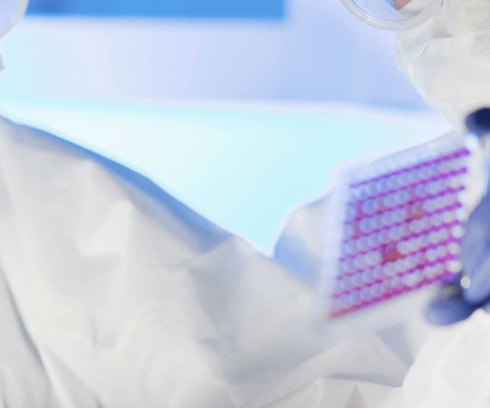
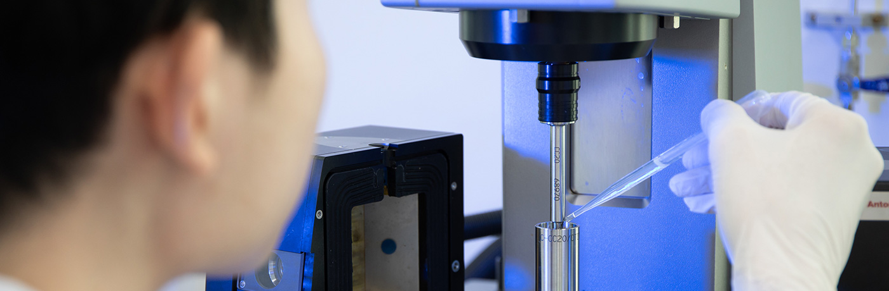

기술연구
첨단 기술을 현장에 적용하여 식품 제조 방식의 선진화를 이끕니다.
-

식품 산업의 고도화를 위한 신기술을 개발하고 선진적으로 현장에 적용합니다. AI, IoT, 협동로봇, 3D프린터 등을 제품 개발 과정에 적용해 개발 역량을 끌어올릴 수 있도록 지원하며, Simulation 기반의 융·복합 해석 기술을 통해 식품 제조 및 생산 과정의 최적화와 혁신을 꾀하고 있습니다. 푸드테크를 기반으로 업계에 새로운 패러다임을 제시하기 위한 연구를 지속해 식품 산업이 지속가능한 미래로 나아가는데 핵심적 역할을 수행합니다.